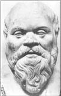
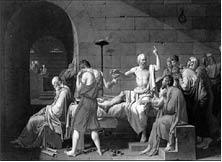

Sokrates
Sokrates (MÖ 470-399)
“Bir şeyleri değiştirmek isteyen insan önce kendinden başlamalıdır.”
Babası heykeltıraş, annesi ebe olan Sokrates, MÖ 470 yılında Atina’da doğdu. Babasının heykeltıraş olmasını istemesine rağmen, o felsefeye yöneldi. Atina’da felsefe tartışmalarının yoğun olduğu bir dönemde yaşayan Sokrates’in felsefeye yönelmesi gayet doğaldı.
Basit ve sade bir yaşam sürdüğünden diğer filozoflar parayla ders verirken Sokrates öğrencilerinden ücret almıyordu. Alışıldığı gibi sınıf içinde değil de, açık havada ders vermeyi tercih ediyordu.
Yazılı bir eser bırakmayan Sokrates’in düşüncelerini, öğrencileri Platon ve Ksenofanes’in kaleme aldıklarıyla öğrenmekteyiz.
Sokrates; evrenden önce kendimizi tanımamız gerektiği üzerinde durarak “Biz kimiz?” sorusunu soruyor ve bilimde temel bilgilerin ötesine geçmeden daha çok insanlara pratik ahlak kurallarını öğretmenin gerektiğini savunuyordu.
Yaşadığı hayatı düşünen ve kendini sorgulayan birinin zamanla kendini tanıyarak, zaten kendisi hakkında iyi olanı yapmak zorunda kalacağını savundu.
Atina meydanlarında, hayatı sorgulamak, kalıplaşmış bilgileri yeniden ele almak gerektiğini söyleyen Sokrates bunu şu örnekle anlatıyordu:
“Antik Atina büyük ve yavaş hareket eden bir at, bense bu atı sürekli uyandırmaya, yerinden oynatmaya çalışan bir at sineğiyim.”
Sokrates soru soranlarla konuşarak onları yönlendirir, böylece insanların cevabı kendilerinin bulmalarını sağlardı. Bu şekilde bilginin aslında kişinin içinde saklı olduğunu, sadece onu dışarı çıkarabilmek için doğru yolu kullanmanın yeterli olduğunu gösterirdi.
Bir gün ders verirken bunu şöyle açıkladı:
“Annem nasıl bir çocuğun dünyaya gelmesine bir ebe olarak yardımcı oluyorsa, öğretmen de öğrencisine yeni bir şey öğretmez, ancak onun aklında var olan bilgileri gün ışığına çıkarır, çünkü bilgiler aklımızda doğuştan vardır.”
Ünlü filozof Sokrates yolda bir tanıdığına rastladığında adam ona,
“Arkadaşınla ilgili ne duyduğumu biliyor musun?”der.
Sokrates, “Bana ne duyduğunu söylemeden önce sana küçük bir test yapmak istiyorum” der.
Bu sözler karşısında adamın şaşırdığını gören Sokra-tes devam eder,
“Hiç şaşırma dostum, düşüncelerimizi filtreden geçirmenin yararlarını şimdi göreceksin. Sana uygulayacağım testin adı ‘üçlü filtre testi’. İlk filtre ‘Gerçek Filtresi’. Şimdi söyle bakalım bana anlatacağın şeyin tam anlamıyla gerçek olduğundan emin misin?”
“Hayır” der adam. “Aslında bunu bana başkası anlattı ve... “
“Tamam” der Sokrates. “Öyleyse, sen bunun gerçekten doğru olup olmadığını bilmiyorsun. Şimdi ikinci filtreye geçelim, ‘İyilik Filtresi’. Arkadaşım hakkında bana söyleyeceklerin iyi bir şey mi?”
“Hayır, aksine.”
“Öyleyse” diye devam eder Sokrates, “Onun hakkında bana kötü bir şey söylemek istiyorsun ve bunun doğru olduğundan da emin değilsin. Fakat yine de son filtreyi kullanalım ‘Yararlılık Filtresi’. Arkadaşım hakkında bana anlatacakların işime yarayacak şeyler mi?”
“Hayır, sanmıyorum.”
“O hâlde” diye sözlerini tamamlar Sokrates, “Eğer bana söyleyeceklerin doğru değil, iyi değil ve işe yarar değilse bunları neden bana anlatasın ki?”
Dine yenilikler getirmeye çalıştığı, gençliğin ahlakını, düşünsel yaklaşımlarını ve toplumun huzurunu bozduğu gerekçesiyle suçlandı. Çıkarıldığı mahkemede kendini savundu, ancak 281’e 220 oyla suçlu bulundu ve baldıran zehriyle ölüme mahkûm edildi. 106
Dinsel bir arınma dönemine rastlayan ölüm cezası bir ay ertelendi. Bunu fırsat bilen, başta Platon olmak üzere, öğrencileri onu kaçırmayı teklif ettiler. Fakat Sokrates, yaşamı pahasına düşüncelerinden ve inandığı değerlerden vazgeçmeyeceğini söyledi.
Ölüm cezası okunduğunda karısı gözyaşlarını tutama-yarak:
“Beni asıl kahreden haksız yere bu cezaya çarptırılman” der.
Sokrates ise şöyle karşılık verir:
“Eğer bu kararlarında haklı olsalardı, asıl o zaman üzülmen gerekirdi.”
Ceza üzerine tekrar konuşma yaptığında sözlerini şöyle bitirir:
“Ayrılma saati geldi ve kendi yollarımıza gidiyoruz, ben ölmeye, siz yaşamaya. Hangisinin daha iyi olduğunu yalnızca Tanrı bilir.”
Sokrates, zehri içmesine saatler kala onu son kez görmeye gelen öğrencilerinden birinin elinde bir saz gördü. Sazın nasıl çalınacağını öğrenmek istediğinde öğrencisi hayretle:
“Üstadım! Ama nasıl olur? Az sonra zehri içeceksiniz, çalmaya vaktiniz olmayacak ve bir zevk duymayacaksınız” dedi.
Sokrates, ölmeden önce son dersini verdi: “Evladım! Asıl zevk çalmakta değil, çalmayı öğrenmektedir.”

Sokrates’in son anlarının tasviri, Ressam Jacques Louis David, 1787
Bir gün Sokrates’e, “Neden sakallarını kesmiyorsun?” diye sorarlar.
Sokrates “Bilinmeyenden korkar insan” der, “Neyle karşılaşacağımı bilmiyorum!”
Karısıyla olan anlaşmazlıklarını ünlü filozof şöyle dile getirmiştir:
“Evlenin, karınız iyiyse mutlu, değilse filozof olursunuz.”
Sokrates’ten...
“Bir tek şey biliyorum, o da hiçbir şey bilmediğim.”
“Sorgulanmayan bir yaşam, gerçekte hiç yaşanmamıştır.”
“Dünyayı harekete geçirecek olan önce kendini harekete geçirsin.”
”Size ne yapacağınızı söyleyebilirler ama ne düşüneceğinizi asla!”
“insan, gülmediği günü yaşadım diye hayat defterine kay-detmemelidir.”